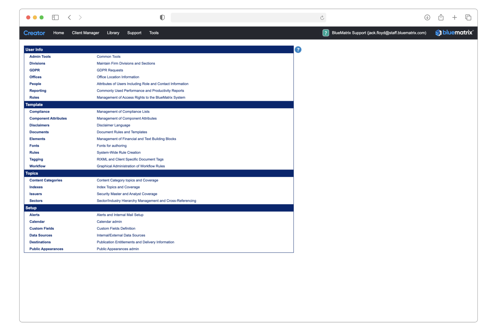
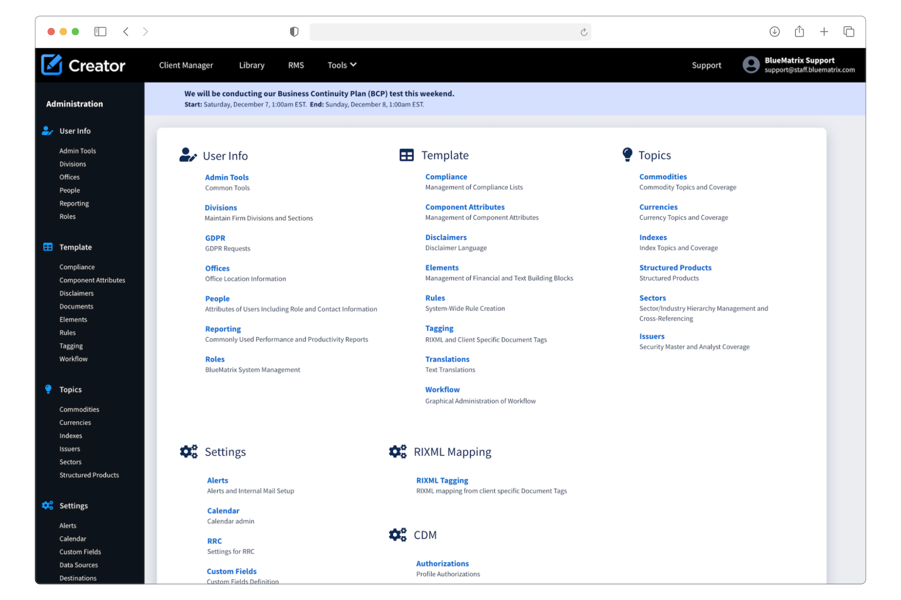
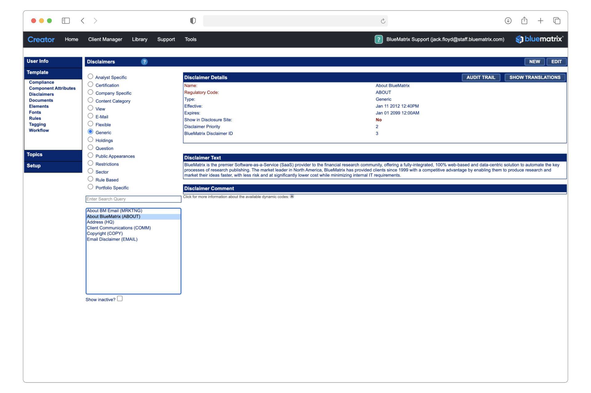
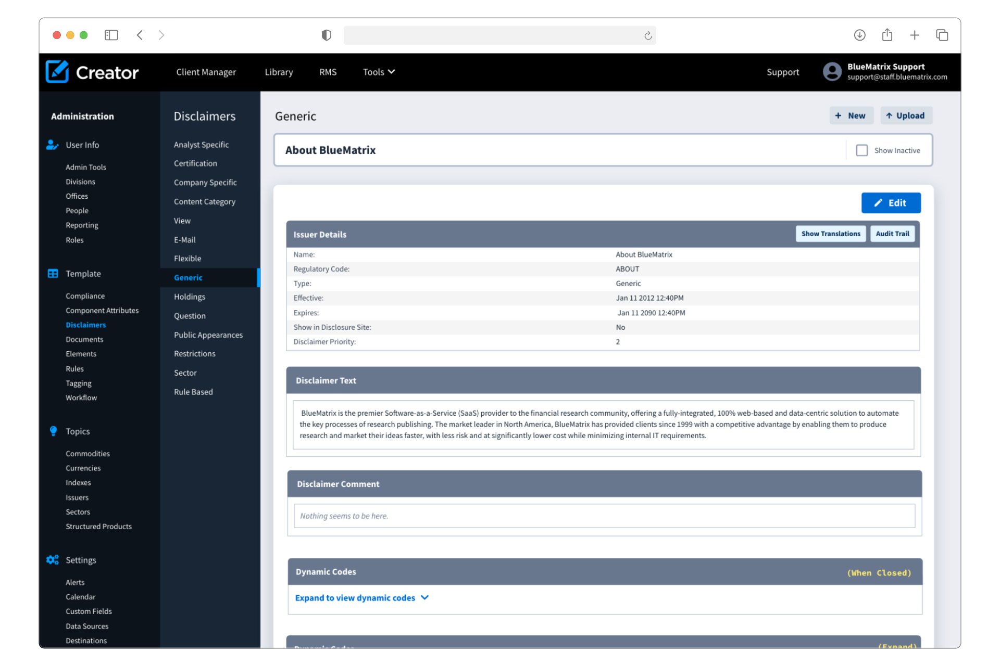
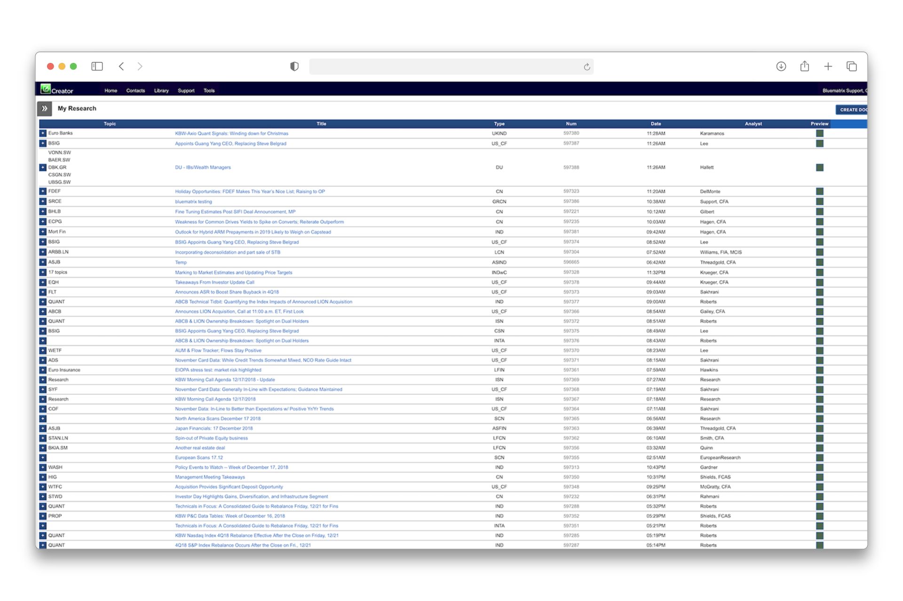
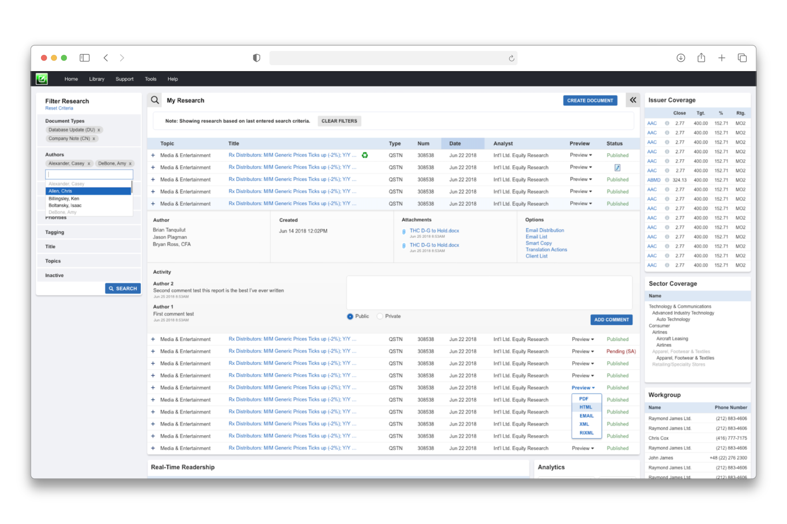

Product Redesign
Reimagining the Admin Hub as an intuitive workspace prioritizing key information and structure for effective workflows
BlueMatrix
Role: Designer
The goal of this redesign was to reimagine the outdated Admin Center to not only modernize the interface but also to improve user interactions to support administrative confidence and intuitive platform configurations, ultimately reducing cognitive load and making tasks easier to perform.

Before
- Confusing tabular presentation of data
- Cluttered design and not responsive to screen size
- Outdated look and feel

After
- Better organized content with clear links and definitions for smoother navigation
- Clear hierarchy of information and device responsiveness
- Cleaner, modular aesthetic for UI consistency

Before
- Confusing interface, no natural place for the eye to look
- Not responsive to screen size, crucial user editing features out of view
- Outdated look and feel

After
- Clearer hierarchy of information, improved navigation and sense of what the user is viewing
- Clear hierarchy of information and device responsive methods of editing features presented to user for actionable items
- Updated aesthetic more appealing and trustworthy to the user
Product Reskin
While a full redesign of the author queue wasn't within scope, I led a focused reskin of the interface, partnering closely with product and engineering to deliver a modernized, streamlined UI. The update preserved core functionality while enhancing reliability and strengthening user trust.

Before
- Overwhelming amount of information presented
- Filled with meaningless icons and pointless whitespace
- Outdated table styles

After
- Accounted for white space issue while decluttered UI
- Displaying filter options for more intuitive approach to document search
- Modular layout for user to make better sense of screens